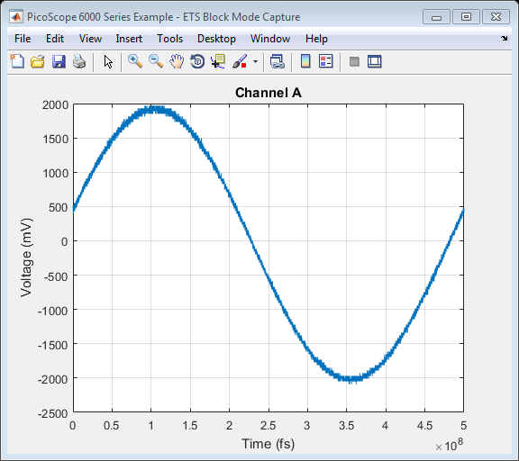

PicoScope 6000 Series Instrument Driver Oscilloscope ETS Block Data Capture Example
This is an example of an instrument control session using a device object. The instrument control session comprises all the steps you are likely to take when communicating with your instrument.
These steps are:
- Create a device object
- Connect to the instrument
- Configure properties
- Invoke functions
- Disconnect from the instrument
To run the instrument control session, type the name of the file, PS6000_ID_ETS_Block_Example, at the MATLAB command prompt.
The file, PS6000_ID_ETS_BLOCK_EXAMPLE.M must be on your MATLAB PATH. For additional information on setting your MATLAB PATH, type 'help addpath' at the MATLAB command prompt.
Example: PS6000_ID_ETS_Block_Example;
Description: Demonstrates how to call functions in order to capture a block of data using Equivalent Time Sampling from a PicoScope 6000 Series Oscilloscope.
Copyright: © 2014 - 2017 Pico Technology Ltd. See LICENSE file for terms.
Contents
Suggested Input Test Signal
This example was published using the following test signal:
- Channel A: 4 Vpp, 2 MHz sine wave
Clear Command Window and Close any Figures
clc;
close all;
Load Configuration Information
PS6000Config;
Device Connection
% Check if an Instrument session using the device object 'ps6000DeviceObj' % is still open, and if so, disconnect if the User chooses 'Yes' when prompted. if (exist('ps6000DeviceObj', 'var') && ps6000DeviceObj.isvalid && strcmp(ps6000DeviceObj.status, 'open')) openDevice = questionDialog(['Device object ps6000DeviceObj has an open connection. ' ... 'Do you wish to close the connection and continue?'], ... 'Device Object Connection Open'); if (openDevice == PicoConstants.TRUE) % Close connection to device disconnect(ps6000DeviceObj); delete(ps6000DeviceObj); else % Exit script if User selects 'No' return; end end % Create a device object. % The serial number can be specified as a second input parameter. ps6000DeviceObj = icdevice('picotech_ps6000_generic.mdd', ''); % Connect device object to hardware. connect(ps6000DeviceObj);
Copyright © 2014 - 2017 Pico Technology Ltd. All rights reserved.
PicoScope 6000 Series MATLAB Instrument Driver
Number of units found: 1
Serial number(s): EW421/006
Opening PicoScope 6000 Series device...
Instrument Device Object Using Driver : picotech_ps6000_generic.mdd
Instrument Information
Type: Oscilloscope
Manufacturer: Pico Technology Ltd.
Model: PicoScope 6000 Series
Driver Information
DriverType: MATLAB generic
DriverName: picotech_ps6000_generic.mdd
DriverVersion: 1.2.20
Communication State
Status: open
Setting Device Parameters...
Default Channel Setup:-
-----------------------
ChannelA:-
Enabled: True
Coupling: DC
Range:5V
Analogue Offset: 0.0 V
Bandwidth: Full
ChannelB:-
Enabled: True
Coupling: DC
Range:5V
Analogue Offset: 0.0 V
Bandwidth: Full
ChannelC:-
Enabled: True
Coupling: DC
Range:5V
Analogue Offset: 0.0 V
Bandwidth: Full
ChannelD:-
Enabled: True
Coupling: DC
Range:5V
Analogue Offset: 0.0 V
Bandwidth: Full
Turning off Equivalent Time Sampling...
Turning off trigger...
Default Block mode parameters:-
Timebase index : 161
Time Interval: 1004.8 ns
Number of pre-trigger samples: 0
Number of post-trigger samples: 1000000
Total number of samples: 1000000
Default Streaming mode parameters:-
Streaming interval: 1.00e-06 s
Streaming auto stop: 1
Default Signal generator parameters:-
Start frequency: 1000 Hz
Stop frequency: 1000 Hz
Offset voltage: 0 mV
Peak to Peak voltage: 2000 mV
Initialisation complete.
Connected to PicoScope 6000 Series device:-
Instrument Model: 6404D
Batch/Serial Number: EW421/006
Analogue Channels: 4
Bandwidth: 500 MHz
Buffer memory: 2048 MS
Maximum sampling rate: 5 GS/s
Signal Generator Type: Arbitrary Waveform Generator
Set Channels
% Default driver settings applied to channels are listed below - % use ps6000SetChannel to turn channels on or off and set voltage ranges, % coupling, as well as analogue offset. % In this example, data is only collected on Channel A so default settings % are used and Channels B, C and D are switched off. % Channels : 1 - 3 (ps6000Enuminfo.enPS6000Channel.PS6000_CHANNEL_B - PS6000_CHANNEL_D) % Enabled : 0 (off) % Type : 1 (ps6000Enuminfo.enPS6000Coupling.PS6000_DC_1M) % Range : 3 (ps6000Enuminfo.enPS6000Range.PS6000_100MV) for the PicoScope 6407 or % 8 (ps6000Enuminfo.enPS6000Range.PS6000_5V) for all other PicoScope 6000 Series models % Analogue Offset: 0.0 % Bandwidth : 0 (ps6000Enuminfo.enPS6000BandwidthLimiter.PS6000_BW_FULL) % Select the correct voltage range and coupling to use voltageRangeIndex = ps6000Enuminfo.enPS6000Range.PS6000_5V; coupling = ps6000Enuminfo.enPS6000Coupling.PS6000_DC_1M; if (strcmp(ps6000DeviceObj.InstrumentModel, PS6000Constants.MODEL_PS6407)) voltageRangeIndex = ps6000Enuminfo.enPS6000Range.PS6000_100MV; coupling = ps6000Enuminfo.enPS6000Coupling.PS6000_DC_50R; end % Execute device object function(s). [status.setChB] = invoke(ps6000DeviceObj, 'ps6000SetChannel', 1, 0, coupling, voltageRangeIndex, 0.0, 0); [status.setChC] = invoke(ps6000DeviceObj, 'ps6000SetChannel', 2, 0, coupling, voltageRangeIndex, 0.0, 0); [status.setChD] = invoke(ps6000DeviceObj, 'ps6000SetChannel', 3, 0, coupling, voltageRangeIndex, 0.0, 0);
Set ETS Mode Parameters
Set Equivalent Time Sampling Parameters The underlying driver will return the sampling interval to be used (in picoseconds).
% Block data acquisition properties and functions are located in the % Instrument Driver's Block group. blockGroupObj = get(ps6000DeviceObj, 'Block'); blockGroupObj = blockGroupObj(1); mode = ps6000Enuminfo.enPS6000EtsMode.PS6000_ETS_FAST; etsCycles = 20; etsInterleave = 4; [status.setEts, sampleTimePicoSeconds] = invoke(blockGroupObj, 'ps6000SetEts', mode, etsCycles, etsInterleave);
Verify Maximum Samples
Use a fast timebase index for calling the ps6000GetTimebase2 function to query the driver as to the maximum number of samples available in the buffer memory. The sample time for ETS mode is returned in the call to ps6000SetEts above.
When calling the runBlock or ps6000RunBlock function with ETS mode set, a timebase index of 0, 1 or 2 must be used.
% timebase : 0 % segment index: 0 timebaseIndex = 0; [status.getTimebase2, ~, maxSamples] = invoke(ps6000DeviceObj, 'ps6000GetTimebase2', timebaseIndex, 0); set(ps6000DeviceObj, 'timebase', timebaseIndex);
Set Simple Trigger
Set a trigger on Channel A, with an indefinite wait for a trigger - the default value for delay is used. In this example, to trigger the oscilloscope, a signal must have rising edge passing through 500mV on Channel A.
% Trigger properties and functions are located in the Instrument % Driver's Trigger group. triggerGroupObj = get(ps6000DeviceObj, 'Trigger'); triggerGroupObj = triggerGroupObj(1); % Set the autoTriggerMs property to 0 to wait indefinitely for a trigger event. set(triggerGroupObj, 'autoTriggerMs', 0); % Channel : 0 (ps6000Enuminfo.enPS6000Channel.PS6000_CHANNEL_A) % Threshold : 50 mV (for the PicoScope 6407) or 500 mV otherwise % Direction : 2 (ps6000Enuminfo.enPS6000ThresholdDirection.PS6000_RISING) thresholdVoltage = 500; if (strcmp(ps6000DeviceObj.InstrumentModel, PS6000Constants.MODEL_PS6407)) thresholdVoltage = 50; end [status.setSimpleTrigger] = invoke(triggerGroupObj, 'setSimpleTrigger', 0, thresholdVoltage, 2);
Set Block Parameters and Capture Data
Capture a block of data and retrieve data values for Channel A.
% Set pre-trigger and post-trigger samples as required - the total of this % should not exceed the value of maxSamples returned from the call to % ps6000GetTimebase2. set(ps6000DeviceObj, 'numPreTriggerSamples', 0); set(ps6000DeviceObj, 'numPostTriggerSamples', 10000);
This example uses the runBlock function in order to collect a block of data - if other code needs to be executed while waiting for the device to indicate that it is ready, use the ps6000RunBlock function and poll the ps6000IsReady function.
% Capture a block of data: % % segment index: 0 (The buffer memory is not segmented in this example) [status.runBlock] = invoke(blockGroupObj, 'runBlock', 0); pause(2); % Retrieve data values: % % start index : 0 % downsampling ratio: 1 % downsampling mode : 0 (ps6000Enuminfo.enPS6000RatioMode.PS6000_RATIO_MODE_NONE) % Provide additional output arguments for the remaining channels e.g. chB % for Channel B. [numSamples, overflow, etsTimes, chA, ~, ~, ~] = invoke(blockGroupObj, 'getEtsBlockData', 0, 0, 1, 0); % Stop the device [status.stop] = invoke(ps6000DeviceObj, 'ps6000Stop');
runBlock:- Collecting block of data: Timebase: 0 Pre-trigger samples: 0 Post-trigger samples: 10000 runBlock: Waiting for device to become ready... runBlock: Device ready. getEtsBlockData: Setting up data buffers... getEtsBlockData: Retrieving data... getEtsBlockData: Assigning data to arrays and converting to millivolts. getEtsBlockData: Data succesfully retrieved.
Process Data
Plot data values returned from the device.
figure1 = figure('Name','PicoScope 6000 Series Example - ETS Block Mode Capture', ... 'NumberTitle', 'off'); % Channel A plot(etsTimes, chA); title('Channel A', 'FontWeight', 'bold'); xlabel('Time (fs)'); ylabel('Voltage (mV)'); grid on;
Turn off ETS Mode
If another operation is required that does not require Equivalent Time Sampling of data, turn ETS mode off.
mode = ps6000Enuminfo.enPS6000EtsMode.PS6000_ETS_OFF;
etsCycles = 20;
etsInterleave = 4;
[status.setEts, ~] = invoke(blockGroupObj, 'ps6000SetEts', mode, etsCycles, etsInterleave);
Disconnect Device
Disconnect device object from hardware.
disconnect(ps6000DeviceObj); delete(ps6000DeviceObj);
Connection to PicoScope 6404D with serial number EW421/006 closed successfully. Libraries unloaded successfully.